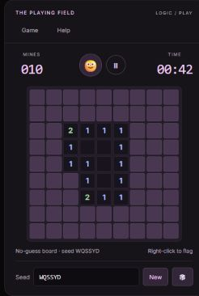

MAKE TIME TO PLAY.
PICK A CARD. TAKE A BREAK.一点好奇心，
现在可玩NO. 001
一点好奇心，
一局小游戏。
不用下载，不用登录。
从熟悉的方格，开始新的一局。
Minesweeper
扫雷熟悉的方格。全新的一局。
让直觉慢一点，让逻辑先走。

ABOUT THIS LITTLE CORNER01 / 01
SMALL IDEAS.
REAL JOY.
你好，这里是 Anton 的小游戏角落。
白天写代码，
白天写代码，
晚上写游戏。
比起把点子留在待办清单里，我更喜欢把它做出来。这里的游戏都很小，打开浏览器，就能玩上一会儿。
先从一局扫雷开始。也许下一次回来，这里又会多一个新念头。
在 GitHub 看看源码为好奇心留个位置。ONE MORE GAME?